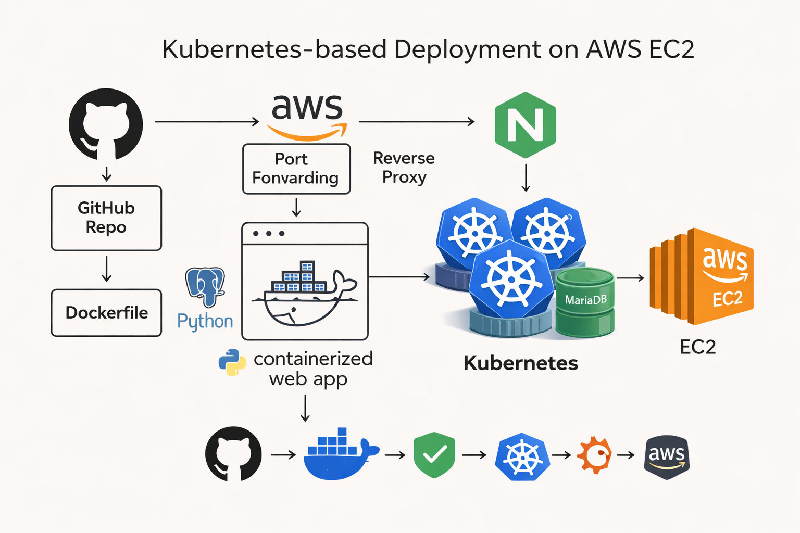
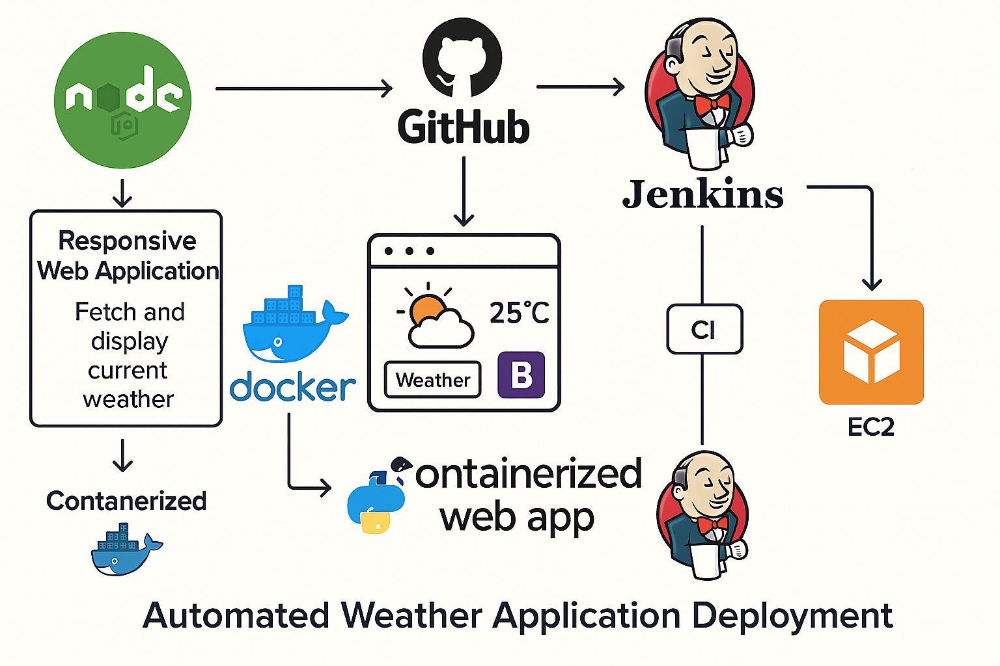
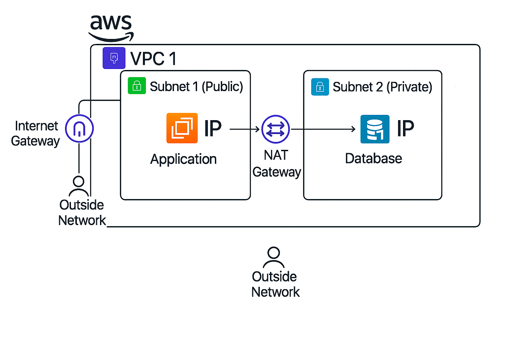
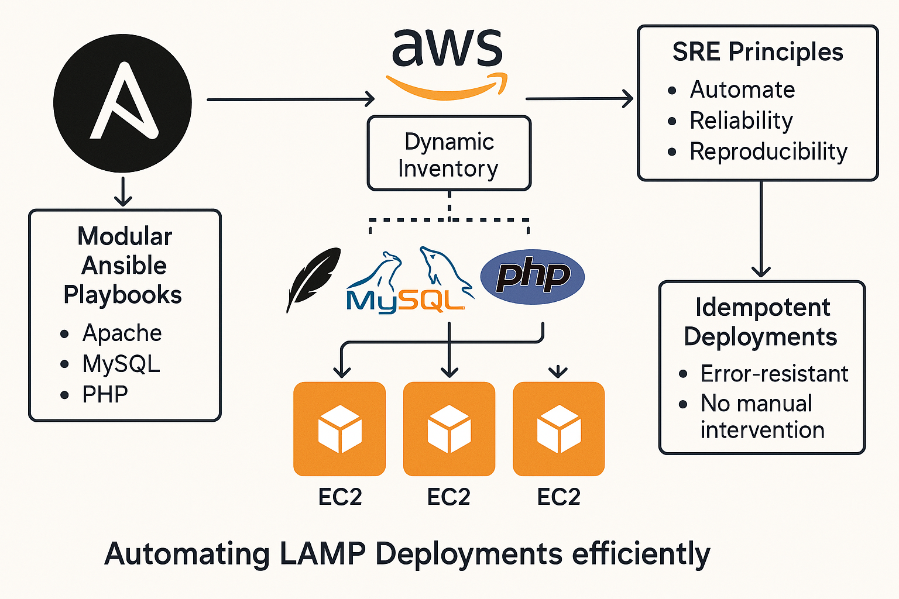
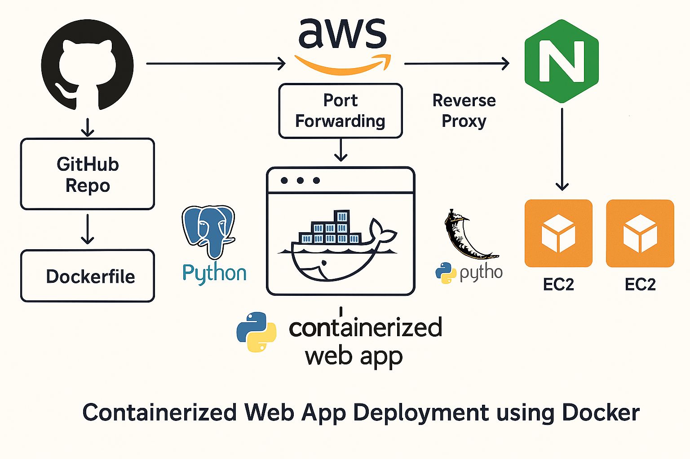
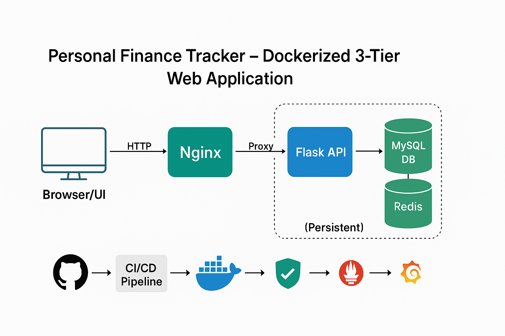

Hi, I'm Pritee — a DevOps Engineer focused on cloud infrastructure, CI/CD automation, containerization, and reliable deployments. I work with AWS, Kubernetes, Terraform, Docker, and GitLab CI/CD to streamline delivery workflows and improve infrastructure reliability. I bring a strong production-support mindset to engineering challenges, with a focus on troubleshooting, performance, and operational stability.
Accelya | April 2026 – Present
Amdocs, Pune | July 2022 – April 2026
Kubernetes, Docker, NGINX, AWS EC2, Ingress, NodePort, MariaDB, Linux, Networking

Node.js, Docker, Jenkins, EC2, Bootstrap

AWS, VPC, Subnets, NAT Gateway, EC2, RDS, Terraform

Ansible, AWS EC2, Linux

Docker, NGINX, AWS EC2, PostgreSQL, Python Flask

Docker, NGINX, Flask, MySQL, Redis, Prometheus, Grafana
